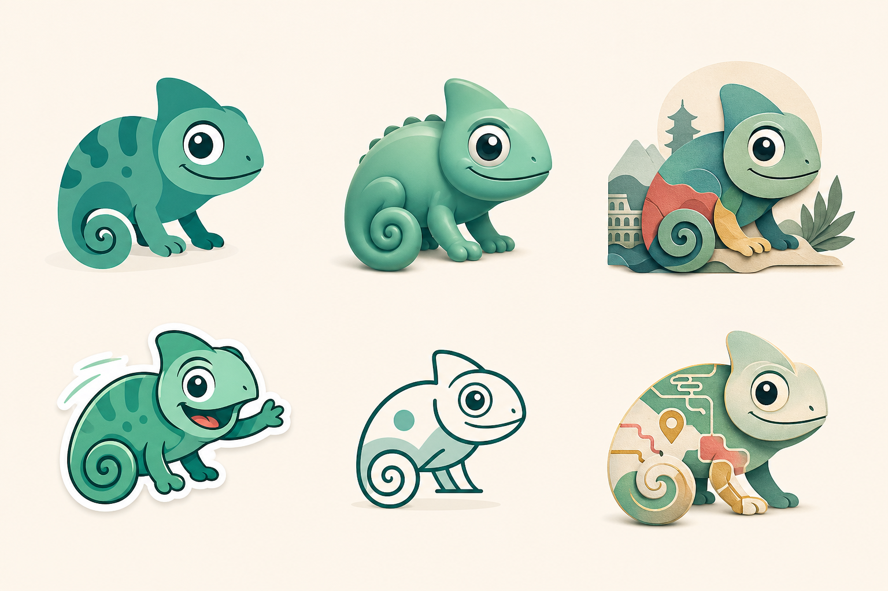
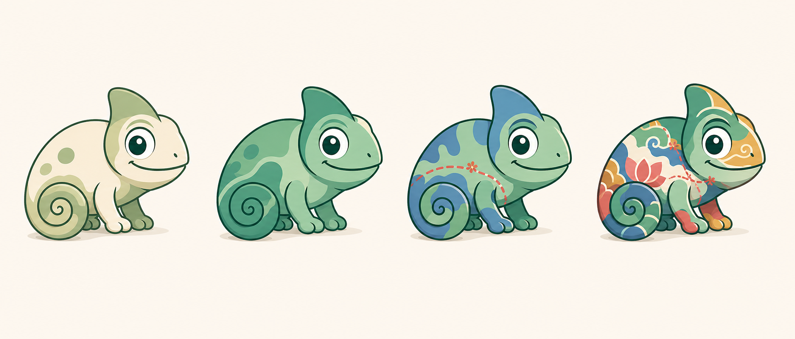
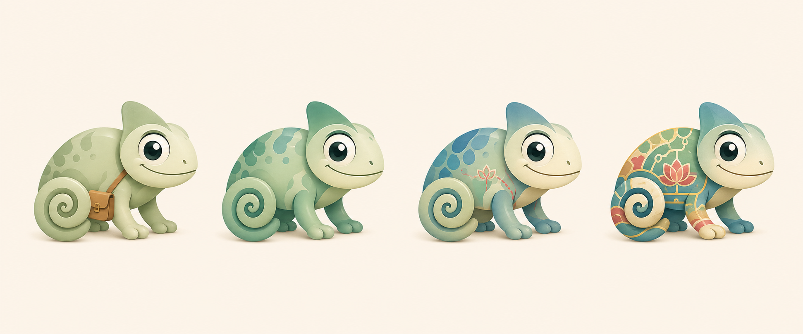
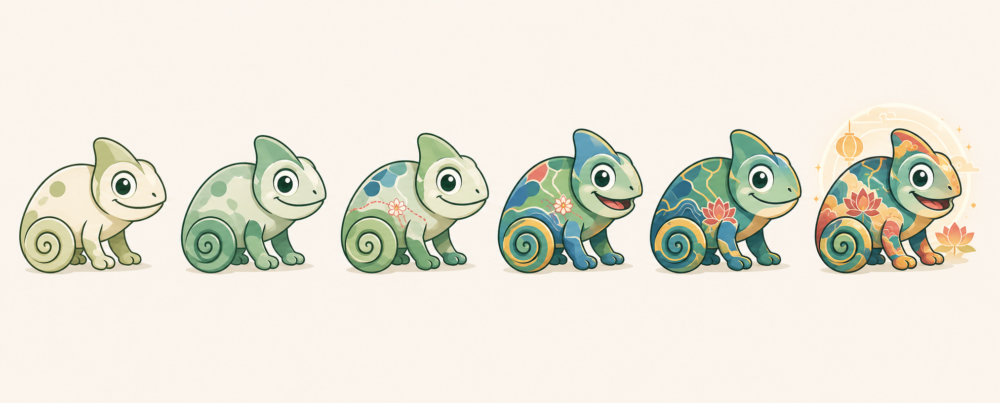
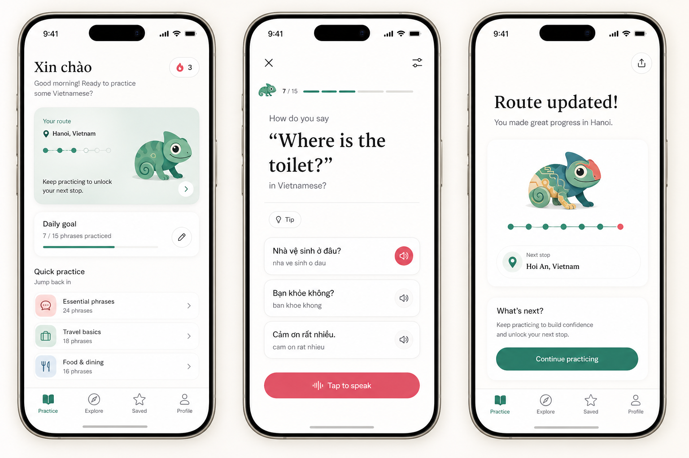
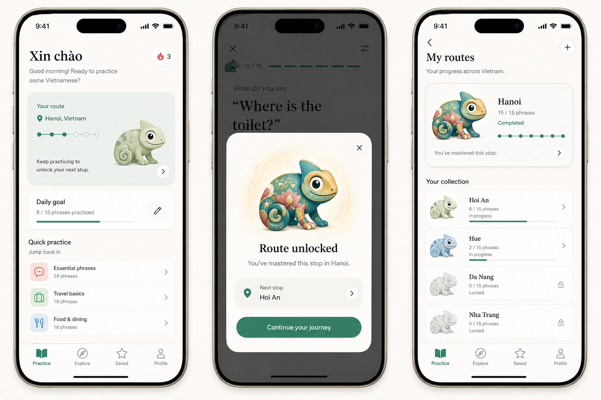

Flat-brand chameleon is the primary mascot direction. Soft 2.5D is backup only.
Chameleon Style Options
A Speak Local mascot direction for the traveling chameleon: one app-native character who goes to different countries to learn different languages. This Vietnamese iOS pass shows one country bucket-list, but the name and base identity stay shared.
Chameleon only
App mascot, not plush doll
Shared mascot
Country colors through practice
Phrase-first UI
Motion-ready states
Name locked: Melo
Neutral base plus six unlock stages: first phrases, city rhythm, traveler confidence, street ready, Vietnam attuned, fully unlocked.
Country and city bucket lists, street-name pronunciation practice, Bucket List Map memory, and restrained unlock moments.
Brand Correction
Melo is not a Vietnam mascot. Melo is the Speak Local chameleon who travels country to country and becomes locally attuned through language practice. Vietnam is the current country pack, not the character's identity.
Each country can change Melo's color, pattern, and bucket-list stamps. The base silhouette, name, face, and personality stay consistent so the mascot can work for Japan, the Philippines, Italy, and future language packs.
Naming Rule
The mascot name must be language-neutral. Country-specific words can appear inside bucket-list names, lessons, unlock marks, and pronunciation drills, but never as the permanent mascot name.
Use travel-friendly terms for the core system: Melo, Bucket List Stamps, Country Bucket Lists, City Bucket Lists, and Bucket List Map. Use Vietnamese terms only inside the Vietnamese lesson content.

The Prompt Difference
The videos do not start with a huge final-art prompt. They start with a base character or reference style, change one thing at a time, and reset when the image drifts. They also design the mascot for use cases: empty states, onboarding, widgets, feedback, and animation loops.
Our earlier prompt was too production-heavy: premium 3D, non-scary, not childish, travel companion, Vietnam motifs, and many avoid rules all at once. That pushed the generator toward a safe plush object. This pass asks first for clear app-mascot shape language, then adds progression and app context.
Chameleon Progression


Dramatic Unlock Ladder

The Unlock Rule
Progress should not be a costume. It should be the same chameleon becoming more fluent in a country or city: color spreads, ceramic-blue river shapes appear, lotus-red details become clearer, and warm-gold accent lines connect into a full camouflage pattern.
To make unlocks feel dramatic enough, the app should reserve the biggest visual change for bucket-list completion. Partial progress can be subtle; completion should be obviously different even at thumbnail size.
Sage and cream become jade, teal, ceramic blue, lotus red, and warm gold.
Pattern grows from tiny patches to full-body country camouflage.
The chameleon becomes more confident, but the base silhouette stays locked.
A soft lantern-like travel glow appears only for high-value unlock moments.
No flags, hats, costumes, XP, coins, trophies, or confetti.
Inside The App

How The Learning Story Works
The base chameleon starts neutral: sage, cream, calm, friendly. As the user practices a country's phrases, Melo gains that country's color language. For Vietnam, that means jade/sea-glass shifts, ceramic-blue patches, lotus-red details, and warm-gold accent lines. For Japan, the Philippines, Italy, or later packs, the country layer changes.
The app should lock one base silhouette before producing all future states. That prevents drift and makes animation possible: idle, listening, correct, gentle correction, bucket list updated, and quiet rest.

Where To Use Drama
The unlock should be a moment, not a permanent noise level. Practice cards can show base and partial states. The completion modal can show the vivid fully attuned chameleon. The bucket list collection can preserve that progress as a small trophy-like memory without using trophies.
This follows the transcript lesson: make feedback human and intentional, but keep the mascot tied to real product states instead of sprinkling character art everywhere.
City Bucket List And Street Names
Map View
The bucket list collection should become a simple travel-log map of where Melo has practiced and where Melo still needs to go. At the shared app level, countries are country packs. Inside the Vietnam pack, cities can own bucket-list nodes: Hanoi, Hue, Hoi An, Da Nang, Nha Trang, Ho Chi Minh City, and later smaller local areas.
Completed country and city bucket lists preserve the fully unlocked chameleon as a memory. In-progress bucket lists show partial coloration. Locked bucket lists show the neutral silhouette.
Street-Name Practice
Add a bucket-list category for proper nouns: street names, districts, landmarks, and common taxi/grab destinations. This is a real traveler pain point because tone marks and diacritics change pronunciation.
Practice formats: listen and choose the street name, repair missing tone marks, match a street sign to audio, and say a taxi phrase using the destination.
Short drills for names a traveler sees repeatedly on signs, maps, and ride-hailing destinations.
Proper-name drills can sit beside cultural bucket lists without turning the app into trivia.
Examples like Nguyen Hue and Bui Vien need audio-first practice because the written form alone is not enough.
Mascot Name
Recommended: Melo
Melo is the locked name for the chameleon because it is short, easy to say, language-neutral, and quietly connected to chameleon and melody. It works as the same character across Vietnam, Japan, the Philippines, Italy, and future country packs.
Vietnamese meaning belongs in Vietnamese content. Melo can earn Vietnam Bucket List Stamps, Japan Bucket List Stamps, Italy Bucket List Stamps, and so on, but the character name stays stable.
Use Bucket List Stamps
The permanent progress term should be Bucket List Stamp, not a Vietnamese word. That keeps the system travel-friendly while still letting each country add local flavor.
For Vietnam specifically, dấu remains useful inside tone-mark lessons and pronunciation explanations. It should not be the shared unlock unit.
Travel-friendly, pronounceable, and not locked to one country. Best default.
Great inside Vietnamese tone-mark lessons. Too Vietnam-specific for the shared progress system.
Means spot/speckle, good for the chameleon's pattern language. Diacritics make it less cross-country.
Cute and app-like, with a soft echo of tắc kè, but more generic and brand-crowded.
Connects to tắc kè hoa and lotus/flower motifs, but feels Vietnam-specific for a traveling mascot.
On-brand as a phrase, but confusing as a character name because it already means hello.
Locked Next Steps
Create the locked Melo flat-brand sheet: front, three-quarter, side, tiny icon, and neutral base plus six unlock stages.
Define idle, listening, correct, gentle correction, bucket list updated, hidden, and street-name challenge states.
Add bucket-list metadata for country, city, street-name pack, completion state, and mascot unlock stage.
Build pronunciation source rows for selected city streets and require audio before speaker icons appear.
Prototype the bucket list collection map with visited, in-progress, and locked chameleon states.
Only integrate static assets after the base sheet is locked; animation comes after state naming is stable.
Options And Tradeoffs
Most app-like, most animation-friendly, and easiest to keep consistent across tiny progress marks and full cards. Risk: can feel too simple unless the expression is charming.
Feels warmer and more premium than flat vector. Risk: can slide back into plush doll territory if material and lighting become the whole personality.
Very memorable and expressive, great for empty states and onboarding. Risk: it can make Speak Local feel more like a kids' game than a calm travel phrasebook.
Feels refined and less toy-like. Risk: harder to animate and may look more like article art than a recurring character.
Best for bottom-level UI marks and progress strips. Risk: not expressive enough to build attachment by itself.
Best as the unlock language layered onto the chosen base. Risk: too much pattern can feel busy or culturally literal.
Verdict
Locked
The mascot direction is Melo, the flat-brand Speak Local chameleon. The progression is a neutral base plus six shared country-camouflage unlocks, with each country adding its own color layer while the base character stays stable.
Next Build Target
The next design packet should be a production base sheet plus a bucket-list model, with Vietnam city and street-name pronunciation as the first concrete implementation.